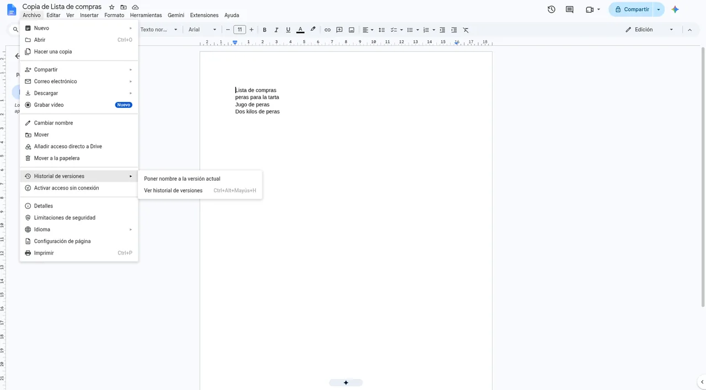
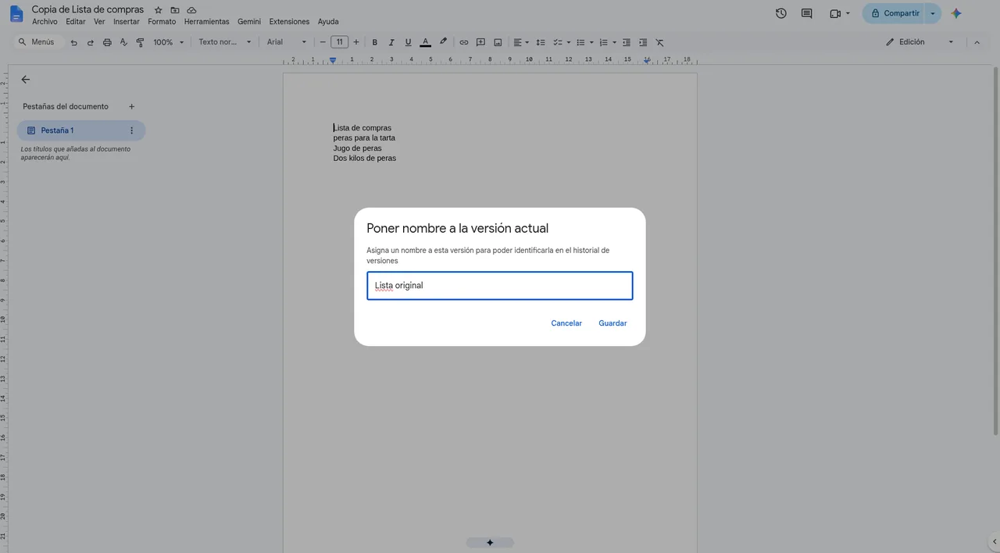
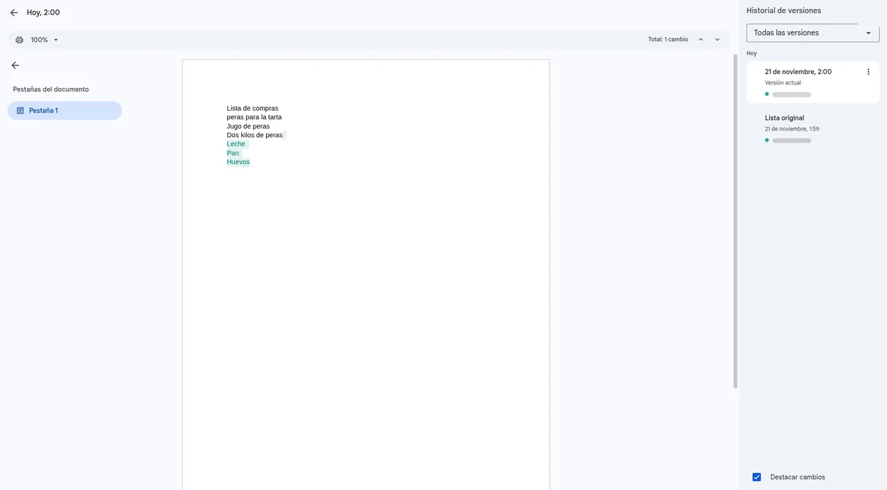
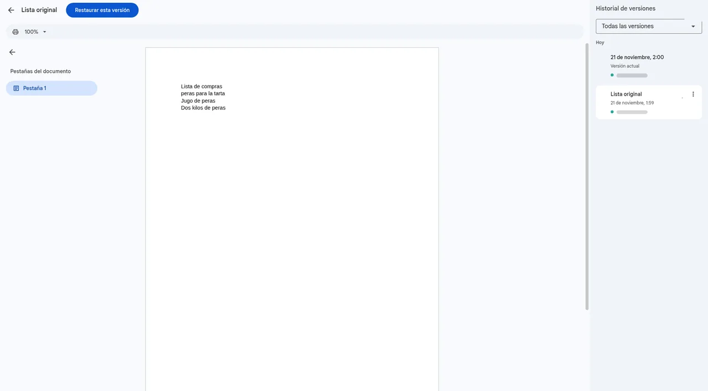
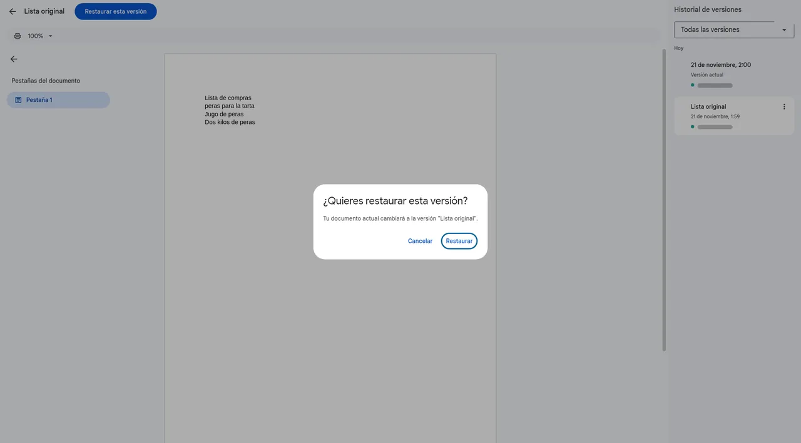
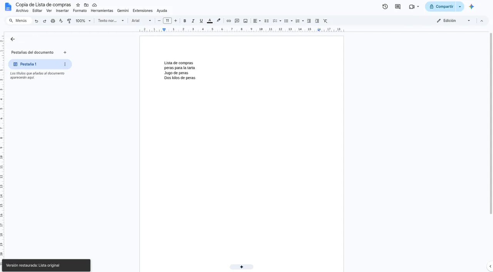

Curso de Google Documentos › Archivo › Lección 7
Lección 7 de 53 · menú Archivo
Cómo recuperar una versión anterior en Google Docs
Fecha del video: · Programado
¿Borraste algo sin querer? Así recuperás una versión anterior de tu Google Doc desde el menú Archivo.
En el ejemplo usamos una copia de prueba de «Lista de compras». En el panel del historial el nombre de la cuenta está tapado.
Paso 1: poné nombre a la versión actual
Andá a Archivo → Historial de versiones y tocá «Poner nombre a la versión actual». Escribí un nombre, por ejemplo «Lista original», y elegí «Guardar». Así después la encontrás más fácil.


Paso 2: abrí el historial de versiones
Volvé a Archivo → Historial de versiones y tocá «Ver historial de versiones» (Ctrl + Alt + Mayús + H). A la derecha elegí una versión: los cambios aparecen resaltados en verde.

Paso 3: restaurá la versión anterior
Con la versión abierta, tocá «Restaurar esta versión» y confirmá con «Restaurar». El documento vuelve a ese estado.



Mirá el Short
Estreno del Short: 24/11/2026 · 09:00 (hora Argentina)
Video relacionado: Google Docs: menú Archivo paso a paso (tutorial completo) — el video largo del menú Archivo (verlo en YouTube).
Fuente oficial: Ayuda de Editores de Documentos de Google. Capturas propias en un documento de ejemplo («Lista de compras»). El video usa voz generada con IA.